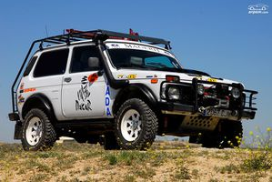
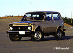
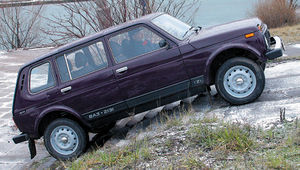
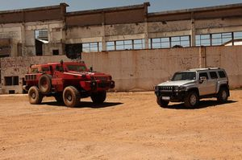

Lada Niva
 De: La Frikipedia, la enciclopedia extremadamente seria.
De: La Frikipedia, la enciclopedia extremadamente seria.
| De la serie vehículos de ayer y de hoy:
|
| Lada Niva
|
| 
|
| Siempre medioroto, nunca estropeado!
|
|
| Marca
|
Lada / AutoVAZ
|
| Modelo
|
Niva/4x4
|
| Antigüedad
|
1977-...
|
| Velocidad
|
Alta en terrenos complicados
|
| Precio
|
Infravalorado
|
| Mano
|
hasta siendo de 11ª mano es capaz de tirar
|
| Combustible que usa
|
Aún siendo gasofa tiene mas par que un diesel
|
| Colores
|
Marrón barro a gotelé
|
| Tipo
|
Todoterreno ¿lo dudabas?
|
| Plazas
|
4 o mas
|
| ¿Se puede tunear?
|
si, porque racing no es mucho...
|
| Notas
|
Todoterreno del milenio.
|
«¡Tu si que no vas!»
~ Takuma Sato al leer el título del artículo
«Claro, si algo está bien y funciona, ¿para que mejorarlo?.»
~ Rusos diseñando el Niva
«Ni SUVs ni crossovers ni esas mariconadas, ¡esto es un todocamino!»
~ Torrente hablando del Niva
El Lada Niva es la máquina definitiva del campo. Es junto con la Citroën C15 el coche favorito de Chuck Norris. Es tan exitoso que a día de hoy se sigue fabricando prácticamente como el día que vio la luz.
Historia
 Lada Niva del año 1974
Lada Niva del año 1984
Lada Niva del año 1990
Lada Niva del año 2001
LadaNiva actual
Lada Niva previsto para el año 2651
Los diseñadores rusos de Lada, amigos del presidente Putin, necesitaban algo con lo que hacer frente al Jeep de los yankees, y al Land Rover de los hijos de la Gran Bretaña. El proyecto empezó a principio de los 70. Tras siete años de dura investigación, en 1977 salió a la venta.
Lamentablemente direis que nació retrasado por lo que tardó en salir a la venta, pero fueron 7 años en los que se trabajó a destajo para conseguir este pedazo resultado.
Fue el primer Lada genuino no basado en un Fiat y fue pensado para la comodidad de los agricultores siberianos.
En 1994 llegó el restyling, porque ya cantaba mucho. Pero solo cambió la trasera
Caracteristicas
Este coche es conocido por arrancar a la primera a mas de 40 grados bajo 0. Eso si, si aún se resiste, cosa bastante improbable en este autómovil quasi-perfecto, aún se puede recurrir a la manivela para mover el cigüeñal. (Estos chicos de Lada están en todo)
El precio de compra era realmente bajo, hasta los años 90 no llegaba al millón de pesetas. Pero claro, un vehiculo tan capaz, económico, robusto, fiable y sencillo de reparar vale mucho mas, por lo que el precio de duplicó con la llegada del restyling. Si quieres tener en tus manos un vehiculo tan exclusivo, eso hay que pagarlo...
La tracción era total y permanente, para que no andes cambiando palanquitas que si quieres trasera, que si ahora quieres 4x4... no no, si compras un todoterreno te compras un todoterreno, 4x4 permanente, onvre lla!
Los consumos tienen la fascinante media de 8,5-9 litros a los 100 km. Por supuesto que siendo un motor de carburador se trata de un autentico record. Además este motor logra arrastrar lo que sea. Vamos, que donde este un Niva, que se quite cualquier diesel.
El habitáculo tiene 4 o 5 plazas, es tan espacioso como un monovolumen actual. Cuenta con muchos extras para la época, como radio etc.
Versiones especiales y plagios
- Chevrolet Niva: Los yankees observaban que los Niva se vendían hasta en Canadá. Por lo que este vehículo les ganó la partida en la Guerra Fria y
se bajaron los pantalones quisieron un modelo como el de los soviéticos. Por lo que la GM y AutoVaz se aliaron y crearon el Chevrolet Niva. Logicamente, al meter mano los americanos, el modelo se quedó a años luz del Niva original.
- Lada Niva Cabrio: Si juntamos a un Niva con el McGyver español de la automoción nos sale esto. Emelba, carrocero español conocido por su imaginación, pidió a Lada que les dejaran preparar una versión descapotable del Niva. También se le conocía como Emelba Niva. Lamentablemente para los españoles, después de quebrar Emelba, Lada se adjudicó el trabajo.
 Niva 5 puertas, subiendo escaleras como tu bordillos
- Lada Niva 5 puertas: Los rusos pensaron en tu comodidad y crearon un Niva mas accesible, con 5 puertas.
Otros Nombres
- Lada/Vaz 4x4
- Vaz Niva
- Lada/Vaz 2121
- Lada/Vaz 2123 (Chevrolet Niva)
- Lada/Vaz 2131 (5 puertas)
Ahora en ruso
- Лада/ВАЗ 4x4
- ВАЗ нива
- Лада/ВАЗ 2121
- Лада/ВАЗ 2123
- Лада/ВАЗ 2131
Competidores
En realidad no deberian llamarse así, por que ni le llegan a la suela del zapato.
- Jeep Wyllis: El Niva fue la respuesta soviética al todoterreno americano, pero le batió en todos los aspectos.
- Land Rover: Los ingleses sacaron su propia versión en los 50. Era mucho mas grande, pero menos practico, pues en el 58, Santana Motors, de Jaén, robaron sus chasis y lo mejoraron. Era un calco y solo se diferenciaban en el logo, pero lo mejoraron, porque lo digo yo.
 Marauder y Hummer. Pobres ilusos...
- Citroën C15: La mejor furgoneta de la historia. Lamentablemente es eso, una furgoneta, por lo que no puede hacer frente a las cualidades del Niva. Pero tampoco se queda atrás. Si no puedes permitirte un Niva, mejor comprate una C15 antes de cualquier mariconada (vease SUVs, crossover etc).
- UMM Jabato: Versión portuguesa del Niva, pero totalmente eclipsada por este.
- Suzuki Samurai: Los japos también quisieron hacer su todoterreno. Esto fue lo mas parecido al Niva, junto al Jimny y el Vitara. Basicamente le perjudican 2 cosas, su precio de 2ª mano (el doble que el Niva) y que Santana también hizo su versión españolizada y mejorada, que no se diferenciaban en casi nada, pero yo lo pongo.
- Canyonero: Famoso todoterreno de Los Simpsons. Un camión con tracción a las 4 ruedas, huele como un filete y tiene asientos para 35. 12 Metros de largo y dos carriles de ancho 65 toneladas de orgullo americano. Lamentablemente solo existe en la serie.
- IATO: Versión italiana del Niva, quiso atemorizar sus ventas usando los pilotos traseros de la mismisima C15, que blasfemia, menuda desfachatez, habráse visto... Comenzó su andadura en 1985 y terminó en 1993 habiendo vendido apenas 3 o 4 coches. Muy tosco y con mecánica Fiat.
- Hummer: El hecho de que este mastodonte esté aquí es por su ambición de comerse al Niva. Fue todo un owned para los americanos, pues prometía mucho, pero en realidad un utilitario de 70cv se movía mejor que el Hummer.
- The Marauder: Versión a lo bestia del Niva. Hecho en Sudáfrica. Según le veas dices, a este no se le resiste nada, pero si hay una cosa... ¿QUIEN COJONES SE VA A COMPRAR UN TODOTERRENO DE 3 METROS DE ANCHO Y ALTO POR 8 DE LARGO?.
Curiosidades
- Niva significa maizal en ruso.
- Participó en el Dakar junto con el Lada Samara
- Fue el todoterreno líder en ventas en España.
- Suele ser bastante caro para comprar de segunda mano, pero lo vale.
- Los 4 puntos anteriores son verídicos aunque no te lo creas.
Ver también
 Transporte Transporte 
|
|
|
Frikipedia 2005-2016, Licencia
GFDL 1.2 - Extraído por FrikiLeaks